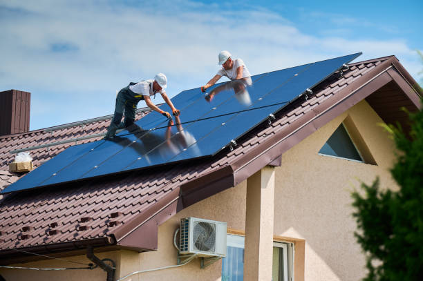

USA - Nationwide
info@Tophandyman.pro
USA - Nationwide
info@Tophandyman.pro

For tailored solutions to your unique home projects, our specialized handyman services provide the perfect blend of expertise and craftsmanship!
Need a specific repair? Our skilled handymen are ready to tackle unique projects with expertise and care. Whatever the task, we’ve got you covered! Usa - Nationwide
Residential & commercial Handy man
Quality services at affordable prices
Immediate 24/ 7 emergency services


Home repairs and maintenance can often be daunting tasks for homeowners . Whether it’s fixing a leaky faucet, repairing squeaky floors, or addressing general wear and tear, you need a reliable handyman service that you can trust. Our team of experienced professionals is dedicated to providing top-quality home repair services tailored to your unique needs. We use the latest techniques and tools to ensure that every job is done right the first time.
Choosing us means choosing quality, reliability, and efficiency. Our handymen are skilled in a wide range of home repair services, and we understand the specific requirements of maintaining homes in Usa - Nationwide. We pride ourselves on our attention to detail and our commitment to customer satisfaction. No job is too big or too small for us.
When you work with us, you're not just hiring a handyman; you're partnering with a team that values your home as much as you do. Our extensive experience in home repairs ensures that we can quickly diagnose problems and offer effective solutions. We believe that maintaining your home shouldn’t be a hassle, so let us handle your repairs while you sit back and relax.
Have you ever found yourself drowning in a sea of Allen wrenches and instruction manuals after purchasing new furniture? Our furniture assembly services are designed to eliminate the stress of DIY assembly. Our professional handymen have years of experience putting together everything from IKEA furniture to custom pieces. We take the hassle out of flat-pack furniture assembly, ensuring that every piece is properly constructed and secure. By choosing us, you’re investing in quality craftsmanship and peace of mind, knowing that your new furniture will be safe and sturdy.

Drywall is a crucial component of any home, but it can easily suffer from damage due to wear and tear, moisture, or impact. Our drywall repair and installation services will restore the beauty of your walls. Whether you need patching, texture application, or complete drywall installation, our skilled team is equipped to handle it all. We use top-quality materials and techniques to ensure a flawless finish. Trust our experienced handymen to deliver high-quality, seamless repairs that will make your walls look as good as new.

Electrical systems are complex and should be handled by certified professionals. Our electrical repair and installation services in Usa - Nationwide encompass everything from replacing outlets to installing lighting fixtures and more. We prioritize safety and compliance with local codes, ensuring your electrical systems function efficiently and safely. Our skilled electricians are dedicated to providing reliable solutions tailored to your needs. Choose us for peace of mind, knowing that your home or business's electrical needs are in safe hands.

Plumbing problems can disrupt your daily life, causing inconvenience and potential damage. From leaky faucets to burst pipes, every issue requires prompt attention. Handy man offers expert plumbing repair and installation services in Usa - Nationwide, dedicated to keeping your home’s plumbing systems running smoothly.
Our experienced plumbers are skilled in diagnosing a wide range of plumbing problems and providing effective solutions. We work with all plumbing systems and fixtures, ensuring that installations, repairs, and replacements are completed to the highest standards. Our team is equipped to handle emergencies, so you never have to wait long for help when problems arise.
We pride ourselves on our professionalism, transparency, and attention to detail. When you choose Handy man, you’re choosing a team that prioritizes your needs and delivers top-quality service. Trust us to restore comfort and functionality to your home .

A fresh coat of paint can transform the look and feel of your home. Our professional painting and touch-up services are perfect for homeowners looking to revitalize their spaces or touch up areas that have been subject to wear and tear.
Our skilled painters bring years of experience and a keen eye for detail. We ensure that all surfaces are properly prepped before painting, using high-quality paints that provide a lasting finish. We understand the importance of color selection and can offer guidance on the perfect shades to match your style and decor.
Why choose our painting services We take pride in our commitment to customer satisfaction, ensuring that every stroke is flawless and meets your standards. We also aim to minimize disruption to your daily life by working efficiently and cleaning up after ourselves.
From interior to exterior painting, to touch-ups, our team is dedicated to providing exceptional service at every step. Experience the joy of a home that reflects your personal style, beautifully finished by our expert hands.

Over time, tile and grout can show signs of wear and tear, which can impact the look of your floors and walls. Our tile and grout repair services in Usa - Nationwide are aimed at restoring beauty and functionality to your surfaces. We specialize in regrouting, cleaning, and repairing tiles, ensuring they look as good as new. Our team's attention to detail and quality workmanship guarantee that you will enjoy a stunning, durable finish. Choose us for reliable service that enhances your space.

Doors and windows are essential for security and energy efficiency but can be subject to wear and damage. Our door and window repair services address all issues from broken hinges and locks to sealing gaps that let drafts in. We provide a comprehensive evaluation to ensure that your doors and windows are operating correctly and efficiently. By choosing our services, you’ll enjoy improved insulation, enhanced security, and better aesthetics. Trust us to keep your home secure and energy-efficient.

Caulking and sealing are essential for maintaining energy efficiency and preventing water damage. Our caulking and sealing services help close gaps, prevent air leaks, and protect your home from moisture intrusion. Our experienced team uses high-quality materials and proper techniques to ensure a perfect seal that lasts. Trust us to identify vulnerable areas and provide solutions that enhance comfort and energy savings in your home.

Home renovations, even the minor ones, can significantly enhance your living space. At Handy man, we specialize in minor home renovations helping you transform your home into a more functional and beautiful environment.
Whether you’re looking to update your kitchen cabinetry, remodel a bathroom, or refresh your living room with a new layout, our team of skilled professionals is here to help. We work closely with you to understand your vision and deliver results that exceed your expectations.
With a focus on craftsmanship and attention to detail, we ensure that every aspect of your renovation is handled with care. Our commitment to customer satisfaction and quality workmanship sets us apart in Usa - Nationwide. Choose Handy man for all your renovation needs and see your dream home come to life.

A deck can be the heart of outdoor living spaces, providing a perfect venue for gatherings and relaxation. Our deck repair and building services will help you maintain or construct your dream deck. We handle everything from complete deck construction to repairs and refurbishments of existing structures. Our expert team uses quality materials to ensure your deck is not only beautiful but also durable and safe. Count on us to enhance your outdoor living experience with a stunning deck.

Fences provide privacy, security, and aesthetic appeal to your property. Our fence installation and repair services cater to all types of fencing needs, whether it’s wood, vinyl, or chain link. Our experienced team will work with you to design and install a fence that not only meets your needs but complements your property. Trust us for all aspects of fence repair as well, ensuring your barriers are robust and striking. Choose us for quality workmanship and exceptional customer service, protecting what matters most to you.

The right flooring can transform your space, adding style, comfort, and value to your home. At Handy man, we specialize in flooring installation services, including laminate, vinyl, and more . Our team is dedicated to providing exceptional craftsmanship and customer service.
We understand that selecting the perfect flooring can be overwhelming, which is why we offer expert guidance throughout the selection process. Our professionals will work with you to choose the best materials that fit both your aesthetic preferences and lifestyle needs.
Installation is just as crucial as selection; our experienced team ensures that your flooring is installed flawlessly, with attention to detail that guarantees a lasting finish. Collaborate with Handy man for all your flooring needs, and enjoy a beautiful and durable floor in your Usa - Nationwide home.

In today’s world, energy efficiency is more important than ever. Upgrading your home’s energy systems not only reduces your environmental footprint, but it can also save you money on your utility bills. At Handy man, we offer comprehensive home energy efficiency upgrade services in Usa - Nationwide, helping you improve your home’s energy performance.
Our services range from installing energy-efficient windows and doors to upgrading insulation and HVAC systems. Our knowledgeable team conducts a thorough assessment of your property to identify areas where upgrades can be made, ensuring that you receive tailored solutions that make a tangible difference.
Why choose us for your energy upgrades? We are dedicated to not only enhancing your home’s efficiency but also improving your overall comfort. Customer satisfaction, transparency, and high-quality workmanship are at the heart of what we do. Trust Handy man to help you create a more energy-efficient home.

The kitchen and bathroom are essential spaces in any home, and well-functioning fixtures are crucial. At Handy man, we specialize in bathroom and kitchen fixture repairs ensuring that everything from leaky faucets to malfunctioning sinks is handled promptly and professionally.
Our experienced technicians are equipped to repair or replace a variety of fixtures, including sinks, faucets, toilets, and showerheads, ensuring that your spaces are functional and aesthetically pleasing. We understand the importance of timely repairs in these high-traffic areas and respond quickly to your needs.
Customer satisfaction is our priority, and we believe in delivering quality work that stands the test of time. With Handy man, residents of Usa - Nationwide can expect reliable services and thorough solutions that enhance their everyday life.

Regular maintenance of your gutters is vital to protect your home from water damage. At Handy man, we offer professional gutter cleaning and repair services ensuring that your home remains safe from the elements.
Clogged or damaged gutters can lead to water overflow, causing structural issues, mold growth, and more. Our team is skilled in not only cleaning gutters but also repairing any damage to ensure they function effectively. We use high-quality materials and reliable techniques to restore your gutters to optimal working condition.
Choosing Handy man means choosing a commitment to quality and customer satisfaction. We provide thorough services at competitive prices, ensuring you have peace of mind knowing your home is protected. Count on us for all your gutter needs in Usa - Nationwide.
Over time, dirt, mold, and grime can accumulate on your home’s exterior surfaces, making your property look dull and uninviting. Our professional pressure washing services are the perfect solution to restore the beauty of your home and enhance curb appeal.
We utilize high-quality equipment and environmentally-friendly cleaning solutions to safely remove tough stains and contaminants from various surfaces, including siding, driveways, decks, and patios. Our experienced technicians understand the best techniques for each type of surface, ensuring effective results without causing damage.
Why choose our pressure washing services? We pride ourselves on delivering exceptional customer service and quality results. Our team is reliable and punctual, showing up when we say we will and treating your property with respect. We also offer flexible scheduling options to suit your needs.
Experience the difference with our pressure washing services, and let us bring back the shine to your property . Your satisfaction is our priority, and we guarantee a thorough, professional job every time.

Proper weatherproofing and insulation are essential for keeping your home comfortable and energy-efficient. Our weatherproofing and insulation services include assessing your home's current insulation levels and sealing drafts to enhance energy efficiency. We offer solutions that contribute to lower energy bills and improved comfort throughout the seasons. Trust our expert team to optimize your home for the best performance against the elements.

Your home's siding is your first line of defense against the elements. It not only affects your home's appearance but also its energy efficiency and structural integrity. At Handy man, we provide expert siding repair and installation services ensuring your home remains protected and beautiful.
Our team is skilled in working with various siding materials, including vinyl, wood, and fiber cement, allowing us to provide tailored solutions to meet your preferences and budget. Whether you’re looking to repair damaged siding or install new siding to enhance your home’s aesthetic appeal, we have the expertise to get the job done right.
Why choose us? We are committed to quality, reliability, and customer satisfaction. Our skilled craftsmen take great pride in their work, ensuring every detail is handled with care. Trust Handy man for exceptional siding services in Usa - Nationwide that protect and beautify your home.

Embracing smart home technology can greatly enhance your lifestyle, offering comfort, security, and convenience at your fingertips. Our smart home installation and setup services cater to all your tech needs, from smart lighting and thermostats to security systems and home automation. Our skilled technicians ensure seamless integration of smart devices, creating an interconnected environment that aligns with your lifestyle. Choose us to simplify your life with reliable smart home solutions.

Seasonal changes bring unique challenges for homeowners. Our seasonal and outdoor handyman services are designed to prepare your home for summer heat or winter chills. From gutter cleaning in the fall to winterizing your home, our knowledgeable staff addresses your seasonal needs promptly. Choose us for comprehensive services that protect your investment and enhance your home’s functionality year-round.

Keeping your home in excellent condition requires regular maintenance, especially during seasonal transitions. Our spring and fall home maintenance services are designed to ensure your home is ready for the changing weather conditions.
In spring, we focus on thorough inspections, cleaning gutters, checking for water damage, and preparing outdoor spaces for enjoyment. In the fall, we provide services like sealing drafts, checking heating systems, and winterizing your home to ensure it’s ready for colder months.
Why choose us for your seasonal home maintenance? Our experienced technicians understand the unique needs of homes in Usa - Nationwide and provide comprehensive care tailored to your property. We emphasize preventive maintenance which can help you avoid costly repairs in the future.
Enjoy peace of mind knowing that your home is well-maintained with our expert services. Let us help you with every aspect of keeping your home in top-notch condition through the changing seasons.

An attractive yard boosts curb appeal and enhances outdoor enjoyment. Our yard maintenance and landscaping services include lawn care, gardening, mulching, and more. We offer customized solutions that fit your preferences and budget while ensuring your outdoor space remains healthy and beautiful. Choose us for dedicated service that enhances your home’s exterior and creates an inviting atmosphere for family and friends.

The holiday season is a time for celebration and joy, and nothing enhances the festive spirit quite like beautifully installed holiday lights. At Handy man, we provide professional holiday light installation services ensuring your home shines bright during the holidays.
Our team handles everything from design to installation, creating stunning displays that highlight your home’s best features. We use high-quality, safe lighting products and ensure that every aspect of the installation is secure and professional.
Why struggle with tangled lights and ladders when you can trust Handy man to do the job? We focus on providing stress-free, reliable service that allows you to enjoy the festivities. Make your holidays magical with our expert light installation services in Usa - Nationwide.

Outdoor furniture enhances your outdoor living space, but it can experience wear and tear from exposure to the elements. Our outdoor furniture repair and assembly services in Usa - Nationwide are designed to restore and maintain your outdoor furniture, allowing you to enjoy your patio, deck, or garden.
Whether you need a new piece of furniture assembled or existing furniture repaired, our skilled team is ready to assist. We work with various materials, ensuring that your outdoor furniture is both functional and stylish.
What sets us apart? We are committed to high-quality craftsmanship and outstanding customer service. Our technicians take the time to understand your needs and offer effective solutions that fit your budget.
Don’t let damaged furniture keep you from enjoying your outdoor space. Trust our team for all your outdoor furniture repair and assembly needs .
A healthy roof is essential for protecting your home from the elements. Our roof inspection and minor repair services focus on identifying and addressing issues before they escalate into major repairs. Our trained professionals assess your roof's condition and provide timely solutions to ensure its longevity. Choose us for comprehensive roof care that safeguards your home and provides peace of mind.
USA - Nationwide Handy man Pros
(877) 848-1711
info@Tophandyman.pro
09.00 AM - 09.00 PM
09.00 AM - 12.00 PM